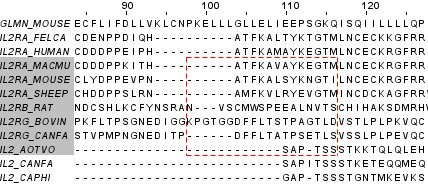

Editing
There are two major ways to edit alignments - in 'Normal mode', gaps are inserted and deleted at the mouse pointer in various ways by clicking the left mouse button and pressing a combination of either shift and control (or the apple key on Macs) and dragging the mouse. Pressing F2 toggles the alternative 'Cursor mode' keyboard editing facility, where the space bar and delete keys add and remove gaps at the current editing position. The key strokes for both these modes are summarised in the keystrokes table.
Tip: For large alignments, deselect "Calculate -> Autocalculate Consensus" to prevent the alignment performing lengthy calculations after every edit.
Inserting / removing gaps - hold down the
"Shift" key. Click on a residue with the mouse and drag it
to the left or right to insert gaps and remove gaps.
If the current selection is a group over all sequences in the
alignment, or a group over some sequences or all columns in the
alignment, then hold down either "Control"
key and drag the residue left or right to edit all sequences in the defined
group at once.
Copy/paste/cut/delete - any sequences which are in the current selection box (indicated in red) may be cut and / or copied to a new alignment or deleted.
Undo / redo - editing of sequences (insertion/removal of gaps, removal of sequences, trimming sequences etc) may be undone or redone at any time using the appropriate menu items from the edit menu. The undo history list only allows a maximum of 10 actions.
Trimming alignment - First select a column by clicking the scale indicator (above the sequences) The alignment may then be trimmed to the left or right of this column. If multiple columns are selected, the alignment is trimmed to the right of the rightmost selected column (or to the left of the leftmost selected column)
Remove gapped columns - Removes columns within the alignment which contain only space characters ("-" or "." or " ")
Removing gaps - Removes all gaps from the alignment. Gaps are "-" or "." or " ".
Set gap character - Switches the gap character between "." and "-". If the "Render Gaps" option from the "View" menu is unticked all gaps will appear as blank spaces.
Editing In Selection Areas
Editing can be restricted to the current selection area. This allows the user to "Lock" the alignment either side of the selection area. Any gap insertions or deletions will only affect the current selection area.
In this example, if Sequence IL2RA_MACMU has gaps removed from position 98-104, the same number of gaps will be inserted at position 116, (between M and L).
Locked selection area based editing was introduced in Jalview 2.08